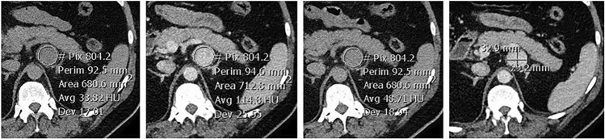
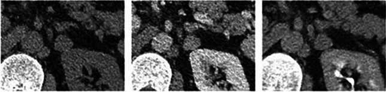

155 — Khối thượng thận tình cờ / Adrenal incidentaloma & Washout
Tags: pattern:khoi-thuong-than vung:thuong-than incidentaloma:thuong-than protocol:CT-washout
Mức chắc chắn (certainty): tổng hợp y văn (literature synthesis) — nhóm tự biên từ y văn mở, chưa gắn ca nguyên văn đơn lẻ.
1. Tổng quan — 10 HU + công thức thải thuốc (Cửa 1)
- CT không tiêm ≤ 10 HU = u tuyến (adenoma) giàu mỡ nội bào → lành 100%, dừng ngay không tiêm! Mỡ đại thể < −30 HU = u cơ mỡ mạch (myelolipoma).
- > 10 HU: chạy washout (trước HUpre + cửa 70s HUenh + muộn 15p HUdel):
- Tuyệt đối: APW = (HUenh − HUdel)/(HUenh − HUpre) × 100% ≥ 60% = adenoma nghèo mỡ.
- Tương đối (thiếu thì trước): RPW = (HUenh − HUdel)/HUenh × 100% ≥ 40%.
- TẠI SAO adenoma thải nhanh: mao mạch + khoảng kẽ ít giữ thuốc; ác tính/di căn giữ thuốc lâu.
- Đặt ROI ≥ 2/3 đường kính, tránh vôi/hoại tử/viền (partial volume).

Trước + cửa + muộn + đo trục. Nguồn: Van Aswegen et al., Abdom Radiol 2024 Fig. 1, CC BY 4.0.2. Gamut khối thượng thận theo HU + lâm sàng
- ≤ 10 HU: adenoma giàu mỡ — dừng.
- > 10 HU + thải đạt: adenoma nghèo mỡ — theo dõi/xét nghiệm chức năng.
- > 10 HU + cơn THA/đánh trống ngực: u tủy thượng thận (pheochromocytoma) — metanephrine trước mọi thủ thuật!
- K tiền sử + to nhanh/hoại tử: di căn/ung thư vỏ thượng thận (ACC) — PET/sinh thiết/mổ.
3. Bảng + bẫy pheo chết người (Cửa 4)
| Thực thể (entity) | Hình ảnh | Chốt | Xử trí |
|---|---|---|---|
| Adenoma giàu mỡ | ≤ 10 HU | Dừng, lành 100% | Xét nghiệm chức năng 1 lần |
| Adenoma nghèo mỡ | APW ≥ 60% / RPW ≥ 40% | Thải đạt + < 4 cm | Theo dõi 6–12 tháng |
| Pheochromocytoma | > 110–120 HU thì cửa + vôi/hoại tử nhưng vẫn thải ≥ 60% giả adenoma | Metanephrine trước mọi can thiệp | Mổ có chuẩn bị alpha-block |
| Di căn/ACC | To nhanh + hoại tử + K tiền sử; ACC thường > 4–6 cm | PET + sinh thiết/mổ | Theo K nguyên phát |

Thải "đạt chuẩn" nhưng là pheo ác — washout không loại trừ pheo/di căn RCC-HCC. Nguồn: Van Aswegen et al., Fig. 5, CC BY 4.0.4. Protocol washout
- Trước tiêm + cửa 70s + muộn 15p (ROI cùng vị trí, ≥ 2/3 đường kính).
- Kèm xét nghiệm: dexamethasone 1 mg + metanephrine + aldosterone/renin (THA).
- ≥ 4 cm hoặc tăng trưởng: PET/sinh thiết/mổ (ác tính tới 40% ở ≥ 4 cm).
5. Cạm bẫy
- Pheo + di căn RCC/HCC giàu mạch thải nhanh giả adenoma — metanephrine + tiền sử K trước khi tin washout.
- Vôi hóa/xuất huyết/hoại tử lớn làm sai ROI — tránh vùng này khi đo.
- Myelolipoma mỡ đại thể đừng gọi adenoma nghèo mỡ — HU < −30 là chốt.
6. Tự lượng giá — Blind Quiz
Ca 1 — Nốt thượng thận 17 mm, washout 89%. Đọc 3 thì + kết luận?
- Hỏi: thải đạt có = adenoma không? Bẫy gì? Xét nghiệm bắt buộc trước mổ?
Bấm để hiện đáp án
- Pheochromocytoma ác: thải 89% nhưng mô bệnh pheo — metanephrine trước mọi thủ thuật (cơn THA chết người khi chạm vào).
- Nguồn: Van Aswegen et al., Fig. 5, CC BY 4.0.
Ca 2 — Nốt 2 cm + 5 HU không tiêm: chẩn đoán + có cần tiêm không? (Bảng mục 3.)
Bấm để hiện đáp án
- Adenoma giàu mỡ: ≤ 10 HU = dừng ngay, xét nghiệm chức năng 1 lần.
Bài liên quan chéo
- 100 – Tổng quan hệ Bụng
- 110 – Giải phẫu bụng (khoang quanh thận)
- 150 – Bosniak & u thận (di căn RCC)
Không dùng để chẩn đoán độc lập khi chưa có người hướng dẫn.